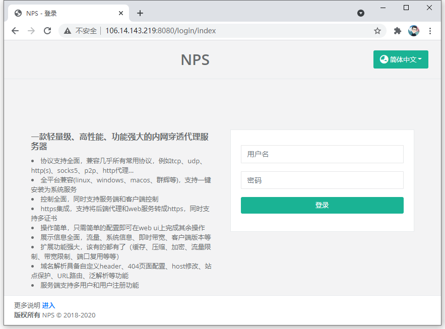

通过在红米 AC2100 搭建 NPS 内网穿透服务访问校园网内网资源
背景
女朋友和我都是南京邮电大学本科生。我目前在校内学习，购买了一台红米 AC2100 在宿舍提供网络服务。她目前在上海某公司实习，但需要不时访问校园内网的部分网站，而我校的本科生是没有校内 VPN 的。我校的校园网采用网页端认证的方式，通过在 p.njupt.edu.cn 输入自己的学号和密码登录校园网，由 DHCP 自动分配 IP。
准备材料
- 红米 AC2100 路由器
- 2 根网线（一根连接墙上网口和路由器 WAN 口，一根连接路由器 LAN 口和电脑）
- 一台阿里云轻量应用服务器（后文会介绍）
- 一个域名
通过 Breed 给路由器刷入 Openwrt
这里恩山大佬「寒枫叶」已经写的非常详细了，按照他的教程来就行。我是通过 breed 刷入 openwrt 过渡包，然后再更新为多功能版。
【Breed】红米AC2100&小米AC2100一键SSH刷Breed和任意固件教程：http://openwrt.ink:88/archives/s-breed
【0310更新】红米&小米AC2100多功能|精简|AP版下载：http://openwrt.ink:88/archives/openwrt-ac2100
购买阿里云轻量应用服务器并部署 NPS
找了半天学生机没找到在哪里，问了下客服发现变成「开发者成长计划」了。购买「轻量应用服务器 1核2G」即可，大概是 10 元一个月。由于我在南京，她在上海，所以服务器机房选择了上海。这里要注意系统镜像要选择「CentOS 7」，据说兼容性会好一些，但是我自己没有精力测试。
购买完成后进入轻量应用服务器管理控制台，在左侧服务器运维——远程连接中，设置 SSH 密码。
通过 Xshell 和 Xftp 连接服务器。在 NPS 的 release 页面下载 v0.26.6 的 linux_amd64_server.tar.gz。将此文件上传至阿里云服务器，然后解压：
1 | tar -zxvf linux_amd64_server.tar.gz |
为什么是 v0.26.6 而不是最新版呢？这个问题我后文会解释。
解压完需要安装并启动，执行命令：
1 | sudo nps install |
此时回到阿里云轻量应用服务器管理控制台，打开 8080 和 8024 端口。
访问 ip:8080 进入 NPS 的 web 管理页面。初始用户名是 admin，密码是 123。

显然，初始密码是非常不安全的，需要我们修改配置文件。
1 | cd /etc/nps/conf |
将配置文件中默认的 public_key、web_password、auth_crypt_key 修改掉。
用新密码登录 NPS 后台，点击左侧菜单「客户端」，点击上方的「新增」。「备注」填写客户端的名称，我填写的「openwrt」。「Basic 认证用户名和密码」留空，「唯一验证密钥」可以手动填写也可以留空自动生成，剩余的选项皆选择「是」。点击「新增」，此时客户端列表应该多出一条你刚刚创建的客户端，连接状态为离线。
在路由器上下载 NPC
如果你观察了 NPS 的 release 页面，你会发现每一个系统及架构同时拥有一个 server 端和一个 client 端。server 端部署在阿里云服务器上，而 client 端就部署在路由器上。
但是等等！还记得上文说应该使用 v0.26.6 而不是最新版吗？原因是这样的：红米 AC2100 使用的芯片是 mipsle 架构，而经过我的亲自测试，直接从 release 页面下载 linux_mipsle_client.tar.gz 是无法在该路由器上正常运行的，会报「Illegal instruction」错误。这个问题在 issue #97 中进行了讨论。
解决方案为下载 GitHub 用户 nwct 编译的版本。该用户没有对每个版本进行编译，目前的最新版本是 v0.26.6。你可以选择下载到本机，然后通过 SCP 工具上传到路由器，用户名为 root，密码为登录 192.168.2.1 的密码，初始为 password。也可以选择在路由器上使用 wget 命令获取。
在路由器上启用 NPC
还记得我们在阿里云服务器上部署的 NPS 吗？再回到 ip:8080，登录之后点击左侧客户端，右侧应该会出现我们之前添加的一条记录。点击记录左边的加号。
复制客户端命令。
打开 Xshell 等 SSH 工具，连接路由器。地址为 192.168.2.1，端口 22，用户名 root，密码为登录 192.168.2.1 网页的密码，初始为 password。执行命令 nohup + 之前复制的客户端命令。大致如下：
1 | nohup ./npc -server=106.14.143.219:8024 -vkey=****** -type=tcp |
执行完就可以关闭终端了，切记不要使用 Ctrl + C 中断。
如果一切正常，NPS 的客户端连接状态就会由离线变为在线，就像我上面两个图一样。
域名解析
打开阿里云域名控制台，或其他任何域名代理商，为域名添加两条 A 型解析，主机记录一个为 * 一个为 @，记录值为轻量应用服务器的 IP。
回到 NPS 后台管理页面，点击左侧域名解析，在右侧菜单中点击新增。客户端 ID 为「左侧菜单中的，客户端中的，之前添加的那条记录的 ID」，备注可以填写为要访问的内网网站标题，主机填写刚才在阿里云解析的域名或二级域名，模式和 URL 路由不变，目标填写要访问的内网网站及端口，例如我要访问 180.209.64.62:80。没有特殊需求的话请求头和请求主机都不需要修改。点击新增。
这样，你就能在域名解析中看到一条刚刚添加的记录。
接下来就是见证奇迹的时刻
访问域名，你将会看到原本只有在校园内网中才能访问的网站。
写在最后
读完此文，你也许有一些疑问，我也有一些话想说。
为什么不使用 FRP？
因为在我的眼中，NPS 一定程度上是 FRP 的加强版，而且其跑在这台 128M 内存的路由器上一点儿也不卡。
为什么不用 LuCI 版本的 NPS？
我确实安装过 luci-app-nps，但是不知道为什么，不管我怎么操作，NPS 就是运行不起来。如果有启动成功的同学欢迎在评论区留言。
路由器断电重启怎么办？
可以把 NPC 注册为服务，开机自启。
有没有更好的方法？
我最初的想法是在校园网网络中心的一台服务器上搭建一个内网 VPN。但是那台服务器不方便我瞎搞，最后作罢。我宿舍还摆着一台闲置的台式机，如果通过网线将路由器和台式机连接起来，然后将 client 端部署在我的台式机上也许会有更强大的性能表现。但是我宿舍有 4 部手机、3 台电脑、显示器、平板、音箱、智能家居等等……插座已经插不下了，这也是台式机闲置的原因。
为什么我绑定的域名叫 stardline.com？
我温柔善良美丽可爱的女朋友曾梦想着创立一家叫「星列」的文化公司，「stardline」是她为其翻译的英文名。这个域名给她使用再合适不过了。